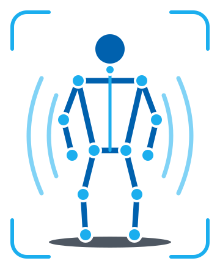

Agachamento
- Joelho cedendo para dentro
- Tronco inclinado para o lado
- Os dois joelhos dobrando por igual
Exercício guiado por voz
O GuiaMove foi feito para pessoas cegas ou com baixa visão. Uma câmera acompanha o corpo e uma voz avisa, na hora, o que ajustar. Ninguém precisa olhar para tela nenhuma.
É só ficar de pé diante da câmera e falar.
Ela é um sensor chamado Kinect. Deixe o corpo inteiro à vista, da cabeça aos pés. Se algo ficar cortado, o sistema avisa.
Ele confere se você está bem enquadrado, explica o exercício e começa.
Se o joelho ou o tronco saírem do lugar, a voz avisa na hora. Ela também conta as repetições.
Sem sensores no corpo e sem equipamento especial. Só uma câmera, um computador e a voz.
Um Kinect (ou uma webcam comum) acompanha o corpo inteiro, de frente.
Ela marca onde estão ombros, cotovelos, quadris, joelhos e pés, várias vezes por segundo. Com esses pontos, o sistema mede se o movimento está certo.
Se o joelho cede para dentro ou o tronco inclina, você ouve na hora. O sistema também explica o exercício e conta as repetições.
Antes de começar, ele confere o enquadramento e avisa se falta luz ou se a cabeça e os pés estão cortados.

Quem se exercita comanda o sistema falando, sem tocar em botão nenhum.
“Parar” funciona sempre, até no meio de uma fala do sistema. Quem acompanha vê tudo numa tela: o vídeo, um boneco 3D que imita o movimento, os avisos de postura e tudo o que o sistema falou. No fim, dá para salvar um relatório da sessão.
Hoje o GuiaMove funciona melhor de frente para a câmera, com o corpo inteiro à vista e o ambiente bem iluminado. Ele apoia exercícios simples e não faz diagnóstico. O próximo passo é um painel pensado primeiro para leitores de tela, para a própria pessoa cega usar sozinha.
Orientação: Elisa Rennó C Dester
Agradecimento especial à colaboração de Gustavo Almeida Barrios, aluno do Inatel com deficiência visual.
O código do GuiaMove está disponível no GitHub, com o passo a passo para rodar em casa.